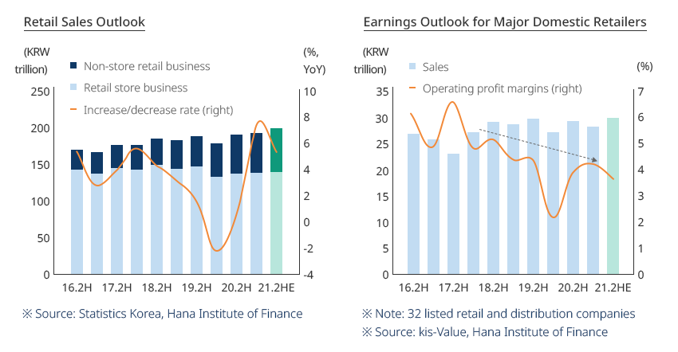
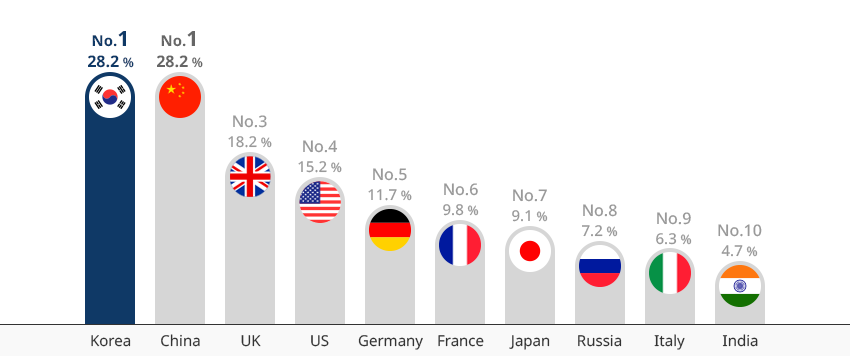
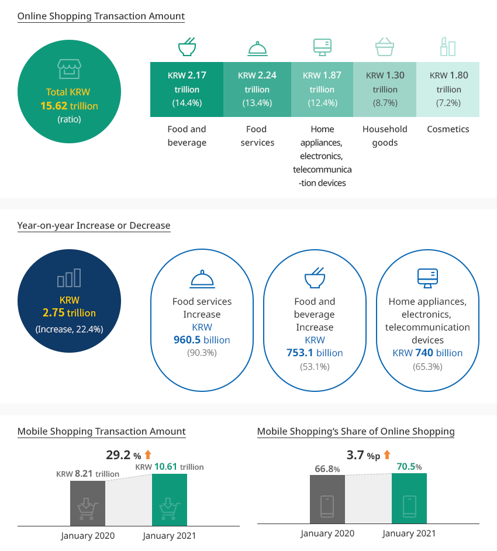
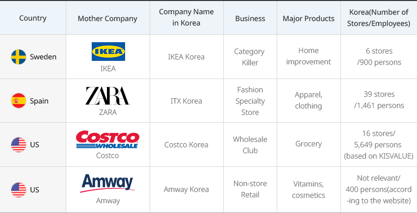
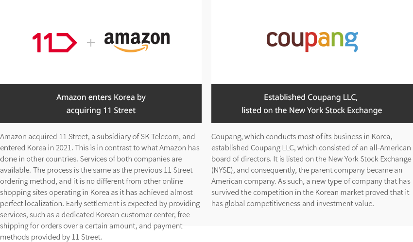
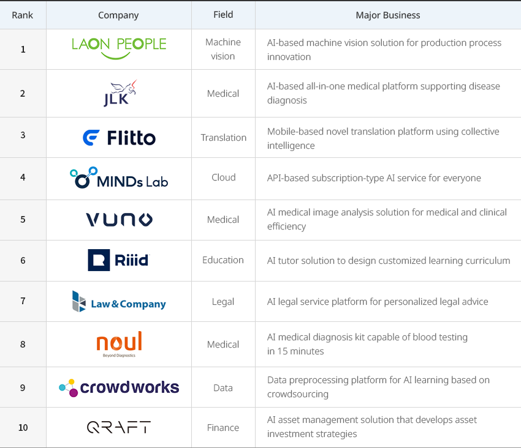
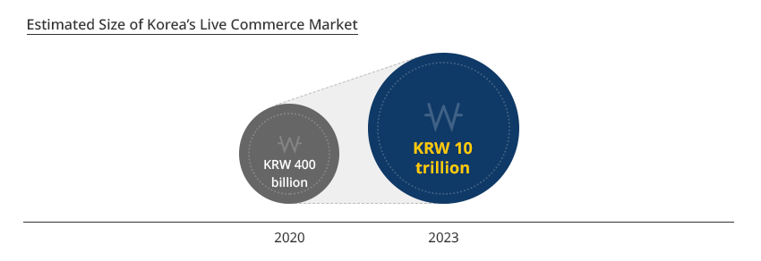
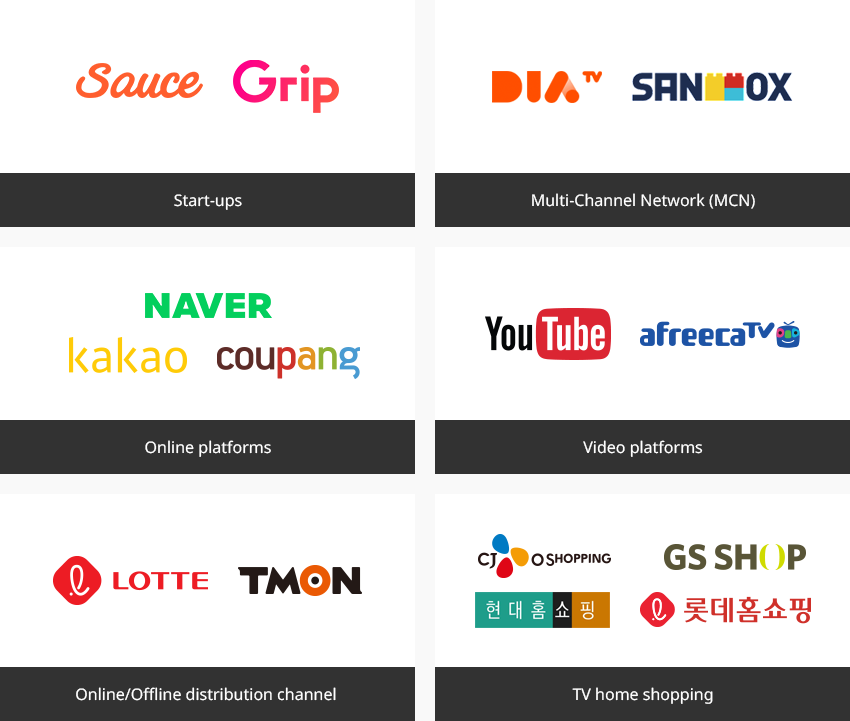

Distributions
- Home
- Why KOREA
- Industry
- Distributions
-
Proven Soundness of Domestic Supply Chain Due to the COVID-19 Situation CloseProven Soundness of Domestic Supply Chain Due to the COVID-19 SituationThe reason why the hoarding phenomenon, which was caused by the COVID-19 crisis in most countries, has not occurred in Korea is due to the soundness of its domestic supply chain. The domestic supply chain, from sourcing, manufacturing, distribution, to sales, was unshakable even in these times of crisis . Most daily necessities are produced in Korea. Numerous online and offline stores, the world's strongest delivery system, consumers who have experienced crises several times, and a sourcing network spread across the globe are defining characteristics of Korea’s supply chain.As a result, a relatively stable level of retail sales was maintained in 2020 and drove production. The total retail sales index recorded 115.2 in February 2021, compared to 100 in 2015. The number is approaching the pre-COVID level of 116.2 from December 2019."Relatively Stable Retail Sales in the COVID-19 Era"Retail Sales Outlook(Non-store retail business, Retail store business, Increase/decrease rate (right)) ※ Source: Statistics Korea, Hana Institute of FinanceEarnings Outlook for Major Domestic Retailers (Sales, Operating profit margins (right)) ※ Note: 32 listed retail and distribution companies
※ Source: kis-Value, Hana Institute of Finance ※ Source: Hana Securities
※ Source: Hana Securities -
Non-face-to-face Retail Business Overcoming the Crisis With Digital Technology OpenNon-face-to-face Retail Business Overcoming the Crisis With Digital TechnologyWhile the need for non-face-to-face retailing is increasing due to the COVID-19 pandemic, online shopping has occupied the largest share in the domestic retail market, even from the pre-COVID era. Online shopping includes TV home shopping, PC-based online shopping, and mobile-based online shopping. The share of PC and mobile-based e-commerce ranked first in the world in 2019."Ratio of E-commerce to Retail Market (2019)"
※ Source: Euromonitor International (2019)The market size of TV home shopping is considerably larger than in other countries, and this also falls under the non-face-to-face retail business. TV home shopping, PC-based online shopping, and mobile-based home shopping all grew, offsetting the sluggishness of offline retail. The growth of mobile online shopping is notable. Compared to January 2020, it recorded sales of KRW 10.6 trillion, a 29.2% increase compared to January 2020, and the proportion of mobile in online shopping also exceeded 70% according to Statistics Korea."Korean Retail Industry in 2020"
Korean Retail Industry in 2020 Year, Year-on-Year Increase or Decrease 2019 2020 Year-on-Year Increase or Decrease Online Shopping Subtotal 149.4 176.2 17.94% TV Home Shopping 14.1 15.1 7.09% PC-based Shopping 48.0 52.5 9.37% Mobile-based Shopping 87.3 108.6 24.40% Large Supermarkets 32.4 33.8 4.32% Department Stores 30.4 27.4 -9.87% Supermarkets 44.2 46.5 5.20% Convenient Stores 25.7 26.5 3.11% Specialty Retail Stores 135.4 122.0 -9.90% Visit/Network Marketing 15.4 14.8 -3.90% Grocery Total 417.5 447.2 7.11% ※ Source: KIET Industrial Economic Review -
Korean Distribution Market Continuous Growth of Online Shopping and Mobile Shopping OpenKorean Distribution Market Continuous Growth of Online Shopping and Mobile ShoppingWhat is particularly noteworthy in the domestic non-face-to-face retail market is the completion of cold chain and prompt delivery services, which consequently increased trade in the food and beverage and food services.
Food service sales increased by 90.3% compared to the same month of the previous year, and food and beverage sales increased by more than 53%. Two items accounted for 27.8% of all total online shopping.
A wide variety of payment systems, various platforms in the food service market, sophisticated online promotions, the world's fastest internet and free services, and the world's highest penetration of mobile phones contributed to this achievement."Korea Online Shopping Market and Mobile Shopping"Online Shopping Transaction Amount - Total KRW 15.62 trillion(ratio)- Food and beverage - KRW 2.17 trillion (14.4%)
- Food services - KRW 2.24 trillion (13.4%)
- Home appliances, electronics, telecommunication devices - KRW 1.87 trillion(12.4%)
- Household goods - KRW 1.30 trillion(8.7%)
- Cosmetics - KRW 1.80 trillion(7.2%)
Year-on-year Increase or Decrease - KRW 2.75 trillion (Increase, 22.4%)- Food services - Increase KRW 960.5 billion (90.3%)
- Food and beverage - Increase KRW 753.1 billion (53.1%)
- Home appliances, electronics, telecommunication devices - Increase KRW 740 billion (65.3%)
- Mobile Shopping Transaction Amount - January 2020 : KRW 8.21 trillion > January 2021 : KRW 10.61 trillion (29.2% Increase)
- Mobile Shopping‘s Share of Online Shopping - January 2020 : 66.8% > January 2021 : 70.5% (3.7%p Increase)
※ Source: Statistics Korea (January 2021), January 2021 Online Shopping Trends -
Global Companies Recording Top Sales After Entering Korea OpenInternational Companies Located in Korea Posted Highest SalesKorean retail companies have multiple retail channels and do business not only through TV home shopping, but also mobile, PC, department stores, large supermarkets, and convenience stores. These companies are making efforts to establish omni-channel business models, so it is difficult to find a company in Korea that is strong only in a specific type of business.Foreign companies that have entered Korea, such as IKEA, ZARA, Costco, and Amazon (which entered Korea in 2021), are filling in this gap. IKEA has successfully entered Korea and has been increasing the number of stores based on solid sales performance. Costco recorded the highest sales among all Costco stores in the world at a Korean branch (Yangjae, Seoul). Many global distribution companies are successfully conducting business in Korea."Major Global Distribution Companies in Korea"
Major Global Distribution Companies in Korea Country, Mother Company, Company Name in Korea, Business, Major Products, Korea (Number of Stores/Employees) Country Mother Company Company Name in Korea Business Major Products Korea (Number of Stores/Employees) Sweden IKEA IKEA Korea Category Killer Home Improvement 6 stores(‘20.07) / 900 persons(‘16) Spain ZARA ITX Korea Fashion Specialty Store Apparel, Clothing 39 stores(‘19) / 1,461 persons (‘19) US Costco Costco Korea Wholesale Club Grocery 16 stores (‘19) / 5,649 persons(‘19) (based on KISVALUE) US Amway Amway Korea Non-store retailing Vitamins, Cosmetics Not relevant/400 persons (according to the website)
※ Data provided by: Department of IT Distribution and Logistics, Soongsil University- Amazon enters Korea by acquiring 11 Street - 2Amazon acquired 11 Street, a subsidiary of SK Telecom, and entered Korea in 2021. This is in contrast to what Amazon has done in other countries. Services of both companies are available. The process is the same as the previous 11 Street ordering method, and it is no different from other online shopping sites operating in Korea as it has achieved almost perfect localization. Early settlement is expected by providing services, such as a dedicated Korean customer center, free shipping for orders over a certain amount, and payment methods provided by 11 Street.
- Established Coupang LLC, listed on the New York Stock Exchange - Coupang, which conducts most of its business in Korea, established Coupang LLC, which consisted of an all-American board of directors. It is listed on the New York Stock Exchange (NYSE), and consequently, the parent company became an American company. As such, a new type of company that has survived the competition in the Korean market proved that it has global competitiveness and investment value.
-
Support Services for Digital Transformation In the Distribution and Logistics Sector OpenSupport Services for Digital Transformation In the Distribution and Logistics SectorThe distribution industry is rapidly undergoing digital transformation Large-scale retail companies in Korea are investing heavily in AI, big data, and smart warehouses, while building omni-channel business models. Nevertheless, few Korean companies can properly support them, especially in the fields of distribution and logistics. The Korean market can be seen as an undeveloped market with great growth potential for overseas companies that have accumulated extensive experience in supporting digital transformation."Top 10 AI Start-ups in Korea"
Top 10 AI Start-ups in Korea Rank, Company, Field, Major Business Rank Company Field Major Business 1 LAON PEOPLE Machine vision AI-based machine vision solution for production process innovation 2 JLK Medical AI-based all-in-one medical platform supporting disease diagnosis 3 Flitto Translation Mobile-based novel translation platform using collective intelligence 4 MINDs Lab Cloud API-based subscription-type AI service for everyone 5 VUNO API-based subscription-type AI service for everyone AI medical image analysis solution for medical and clinical efficiency 6 Riiid Education AI tutor solution to design customized learning curriculum 7 Law&Company Legal AI legal service platform for personalized legal advice 8 noul Medical AI medical diagnosis kit capable of blood testing in 15 minutes 9 crowd works Data Data preprocessing platform for AI learning based on crowdsourcing 10 QRAFT Finance AI asset management solution that develops asset investment strategies
-
Korean Consumers Open to New Technologies OpenKorean Consumers Open to New TechnologiesKorean consumers are very open to new technologies and new sales methods. Korean consumers with a high level of education and strong curiosity adapt easily to the digital age, where the pace of innovation is very fast. The success of Coupang, which has become synonymous with mobile shopping, was possible because these Korean consumers became their customer base. New format channels, such as video commerce and the metaverse, are emerging one after another. These formats are already well known or significant investments are being made in the Korean market. The Korean market is the best test bed to gauge how widespread a new business model can be."Korea’s Live Commerce Market" 2023 KRW 10 trillion">
"Live Commerce Related Companies"
- Start-ups - Sauce, Grip
- Multi-Channel Network (MCN) - DIA TV, SANDBOX
- Online platforms - Naver, Kakao, coupang
- Video platforms - Youtube, afreecaTV
- Online/Offline distribution channel - LOTTE, TMON
- TV home shopping - CJ O shopping, GS SHOP, Hyundae Homeshopping, Lotte Homeshopping
※ Source: Kyobo Securities


Invest KOREA